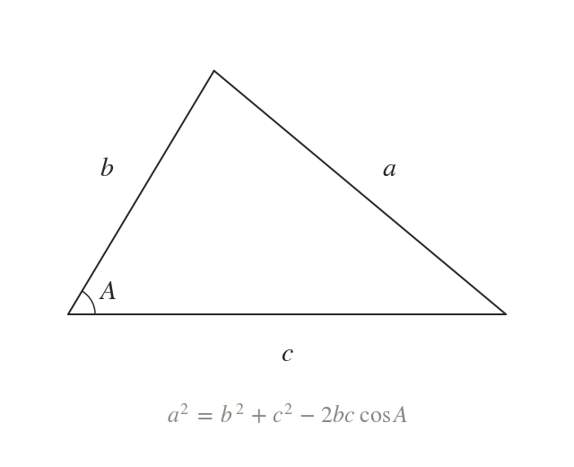
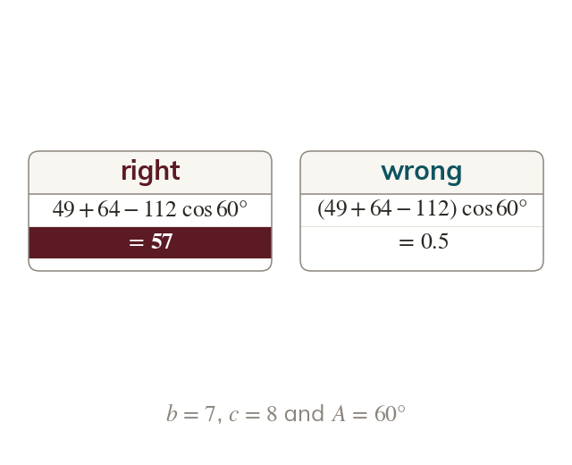
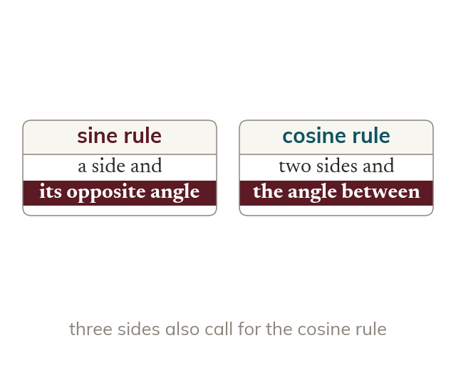
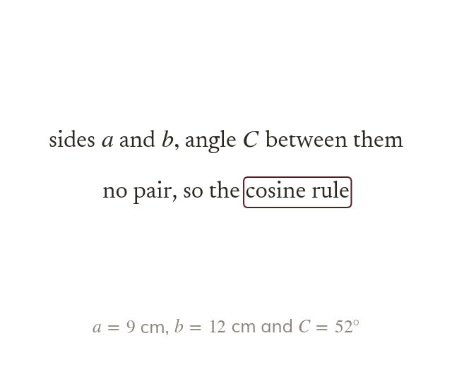

The angle between the two sides
The cosine rule uses two sides and the angle between them. It finds the third side, opposite that angle.
Given two sides and the angle between them, no side-and-opposite-angle pair is known, so the sine rule cannot start. Today we use the cosine rule, which extends Pythagoras to every triangle.
Work down the page at your own pace. Write every answer in your book first, then click to check it.
Read each card, then follow the worked examples one step at a time.

The cosine rule uses two sides and the angle between them. It finds the third side, opposite that angle.

The term is worked out first, then subtracted. Subtracting before multiplying gives nonsense.
Pick an answer. If it's wrong, the feedback tells you which mistake it was.
Read each card, then follow the worked examples one step at a time.

Look for a side with its opposite angle. A complete pair calls for the sine rule; otherwise use the cosine rule.

Write down what is given before choosing. The choice of rule is part of the working.
Pick an answer. If it's wrong, the feedback tells you which mistake it was.
Finished? Next lesson: 11H.2.5 Cosine Rule Angles and Area.
For each skill, tap the one that is true for you today. Your Revise pages start with anything you mark Not yet.
Your ratings are saved on this device only.
Log in, then search for a code to practise that skill.
Videos, worksheets and more on each part of this lesson.